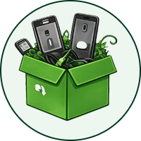

O QUE É LIXO ELETRÔNICO
Lixo eletrônico, também chamado de e-lixo ou REEE (Resíduos de Equipamentos Eletroeletrônicos), é todo material elétrico ou eletrônico descartado. Isso inclui celulares, computadores, televisores, eletrodomésticos, pilhas e baterias que quebraram, ficaram obsoletos ou não possuem mais utilidade para seus proprietários.
QUAIS ITENS SÃO LIXO ELETRÔNICO
Nunca jogue lixo eletrônico comum em ruas, terrenos baldios ou na natureza. Além de poluir o ambiente, você pode estar colocando vidas em risco!
IMPACTOS DO DESCARTE INADEQUADO
O descarte incorreto de lixo eletrônico libera substâncias tóxicas, como chumbo, mercúrio e cádmio, no meio ambiente. Isso causa a contaminação do solo e da água, colocando em risco os ecossistemas locais. Além disso, a inalação ou contato direto com esses compostos por pessoas e animais pode acarretar graves problemas de saúde a longo prazo.
COMO DESCARTAR CORRETAMENTE

SEPARE
Os eletrônicos que não possuem mais uso em sua casa ou empresa.
LOCALIZE
Os eletrônicos que não possuem mais uso em sua casa ou empresa.
ENTREGUE
Os eletrônicos que não possuem mais uso em sua casa ou empresa.
FAÇA A DIFERENÇA
Os eletrônicos que não possuem mais uso em sua casa ou empresa.
Se o equipamento ainda funciona, considere doar ou vender para que outra pessoa possa utilizá-lo por mias tempo. Reutilizar também é cuidar!